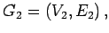
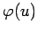
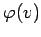
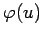
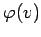
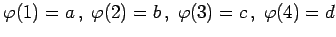
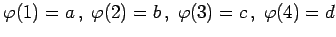

Inhalt Index DeskTop Bronstein

 Algebra und Diskrete Mathematik Algorithmen der Graphentheorie Grundbegriffe und Bezeichnungen
Algebra und Diskrete Mathematik Algorithmen der Graphentheorie Grundbegriffe und Bezeichnungen


Ein Graph G1=(V1,E1) heißt isomorph zu einem Graphen  wenn es je eine bijektive Abbildung  von V1 auf V2 und
von V1 auf V2 und  von E1 auf E2 gibt, die verträglich mit der Inzidenzfunktion ist, d.h., sind u,v die Endpunkte einer Kante bzw. u Startpunkt eines Bogens und v Zielpunkt dieses Bogens, dann sind  und  Endpunkte einer Kante bzw. Startpunkt und Zielpunkt eines Bogens.
von E1 auf E2 gibt, die verträglich mit der Inzidenzfunktion ist, d.h., sind u,v die Endpunkte einer Kante bzw. u Startpunkt eines Bogens und v Zielpunkt dieses Bogens, dann sind  und  Endpunkte einer Kante bzw. Startpunkt und Zielpunkt eines Bogens.
Die folgenden Abbildungen zeigen zwei zueinander isomorphe Graphen.
Die Abbildung  mit  ist ein Isomorphismus. Es ist sogar jede bijektive Abbildung von {1,2,3,4} auf {a,b,c,d} ein Isomorphismus, weil die Graphen vollständige Graphen mit gleicher Knotenzahl sind.
mit  ist ein Isomorphismus. Es ist sogar jede bijektive Abbildung von {1,2,3,4} auf {a,b,c,d} ein Isomorphismus, weil die Graphen vollständige Graphen mit gleicher Knotenzahl sind.